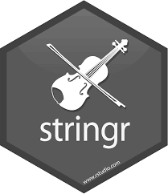

Functions for Lesson 8
str_which,str_detect,str_locate,str_view,str_sub
Packages for Lesson 8
stringr
Use the stringr package to cut, substitute, print, and manipulate character and text strings in R. Useful for webscraping text from webpages, scraping PDFs and text files for given characters and words, mining genomics data, etc.
Cheat sheet for the stringr package.

Install necessary packages
# install.packages('pacman') # uncomment and install this first
pacman::p_load(stringr, stringi, dplyr, reprex, xml2, rvest)First, we need some text data. As an exercise, since we're using strings, we're going to use all the text from the webpage on using strings from the R for Data Science textbook as our text sample.
require(xml2) # read html data
require(rvest) # select html elements
url <- "https://r4ds.had.co.nz/strings.html"
txt <- url %>% read_html %>% html_text() # scrape web text from url
txt %>% str chr "14 Strings | R for Data Science\n window.dataLayer = window.dataLayer || [];\n function gtag(){dataLayer."| __truncated__txt %>% str_length() # get length of vector [1] 49589Search for location of string patterns using str_detect, str_which, and str_locate
pat <- "strings" # string pattern to search for
txt %>% str_detect(pat) # returns logical if vector contains that pattern [1] TRUEtxt %>% str_which(pat) # show which vector the pattern exists [1] 1txt %>% str_locate(pat) # show character positions of the first instance of pattern start end
[1,] 1089 1095txt %>% str_locate_all(pat) # show all positions [[1]]
start end
[1,] 1089 1095
[2,] 1257 1263
[3,] 1381 1387
[4,] 1734 1740
[5,] 2935 2941
[6,] 3072 3078
[7,] 3276 3282
[8,] 3787 3793
[9,] 3819 3825
[10,] 4772 4778
[11,] 4896 4902
[12,] 5429 5435
[13,] 6452 6458
[14,] 7719 7725
[15,] 8275 8281
[16,] 8943 8949
[17,] 9098 9104
[18,] 9182 9188
[19,] 10161 10167
[20,] 10265 10271
[21,] 19511 19517
[22,] 28886 28892
[23,] 36969 36975
[24,] 38179 38185
[25,] 40201 40207
[26,] 44744 44750
[27,] 46332 46338
[28,] 48152 48158
[29,] 48418 48424
[30,] 48444 48450Subset and cut up strings into manageable pieces
# subset string portion based on char position
txt %>% str_sub(txt %>% str_locate(pat) # use positions from above func
)
[1] "strings"
# insert user text into string position, e.g. between 1 and 2
str_sub(txt, 1, 2) <- "INSERT TEXT AT POSITION"Shorten text with ellipsis to nth character
txt_short <- txt %>% str_trunc(2000) # munst be greater than 3 as this is the length of the ellipsis
txt_short[1] "INSERT TEXT AT POSITION Strings | R for Data Science\n window.dataLayer = window.dataLayer || [];\n function gtag(){dataLayer.push(arguments);}\n gtag('js', new Date());\n \n gtag('config', 'UA-115082821-1');\n \n\n\n\n Skip to main content\n\n \n \n R for Data Science\n \n Show table of contents\n \n\n \n \n \n\n Table of contents\n Welcome\n1 Introduction\nExplore\n2 Introduction\n3 Data visualisation\n4 Workflow: basics\n5 Data transformation\n6 Workflow: scripts\n7 Exploratory Data Analysis\n8 Workflow: projects\nWrangle\n9 Introduction\n10 Tibbles\n11 Data import\n12 Tidy data\n13 Relational data\n14 Strings\n15 Factors\n16 Dates and times\nProgram\n17 Introduction\n18 Pipes\n19 Functions\n20 Vectors\n21 Iteration\nModel\n22 Introduction\n23 Model basics\n24 Model building\n25 Many models\nCommunicate\n26 Introduction\n27 R Markdown\n28 Graphics for communication\n29 R Markdown formats\n30 R Markdown workflow\n\n View book source \n \n \n \n\n14 Strings\n\n\n\n14.1 Introduction\n\nThis chapter introduces you to string manipulation in R. You’ll learn the basics of how strings work and how to create them by hand, but the focus of this chapter will be on regular expressions, or regexps for short. Regular expressions are useful because strings usually contain unstructured or semi-structured data, and regexps are a concise language for describing patterns in strings. When you first look at a regexp, you’ll think a cat walked across your keyboard, but as your understanding improves they will soon start to make sense.\n\n\n14.1.1 Prerequisites\n\nThis chapter will focus on the stringr package for string manipulation, which is part of the core tidyverse.\n\nlibrary(tidyverse)\n\n\n\n\n14.2 String basics\n\nYou can create strings with either single quotes or double quotes. Unlike other languages, there is no difference in behaviour. I recommend always using \", unless you want to create a string that contains multiple \".\n\nstring1 <- \"This is a string\"\nstring2 <-..."Return string as char vector containing pattern
txt %>% str_subset(pat)Extract string patterns as characters
txt %>% str_extract(pat) # pull pattern out of string [1] "strings"txt %>% str_extract_all(pat, simplify = F) # extract all patterns as string . set simplify = T to return matrix[[1]]
[1] "strings" "strings" "strings" "strings" "strings" "strings" "strings" "strings" "strings"
[10] "strings" "strings" "strings" "strings" "strings" "strings" "strings" "strings" "strings"
[19] "strings" "strings" "strings" "strings" "strings" "strings" "strings" "strings" "strings"
[28] "strings" "strings" "strings"txt %>% str_match(pat) # extract pattern as matrix [,1]
[1,] "strings"txt %>% str_match_all(pat) # extract all pattern instances as matrix [[1]]
[,1]
[1,] "strings"
[2,] "strings"
[3,] "strings"
[4,] "strings"
[5,] "strings"
[6,] "strings"
[7,] "strings"
[8,] "strings"
[9,] "strings"
[10,] "strings"
[11,] "strings"
[12,] "strings"
[13,] "strings"
[14,] "strings"
[15,] "strings"
[16,] "strings"
[17,] "strings"
[18,] "strings"
[19,] "strings"
[20,] "strings"
[21,] "strings"
[22,] "strings"
[23,] "strings"
[24,] "strings"
[25,] "strings"
[26,] "strings"
[27,] "strings"
[28,] "strings"
[29,] "strings"
[30,] "strings"View an HTML rendering of the text using str_view()
# visualise the first 1000 characters
txt %>% str_sub(1, 1000) %>% str_view(" ")Split the text into separate components and apply the str_sub function to each new component
# split into matrix at every instance of pattern
txt_split <- txt %>% str_split_fixed(pat, n = Inf)
txt_split %>% dim # get dimensions of matrix [1] 1 31txt_split[1, 20] # view 1st row and 3rd column [1] " that represent the regular expression as \"\\\\.\".\n\n\n14.3.1.1 Exercises\n\nExplain why each of these "Replace pattern instances with new pattern
repl <- "when you really need that coffee hit" # replacement character string
txt %>% str_replace_all(pat, repl)You'll notice that the first instance of the returned pattern is capitalised, so the replacement doesn't catch it and thus ignores the string. We can easily tell R to detect all instances of the pattern by ignoring case using regex
pat_all <- regex(pat, ignore_case = T)
pat_all
txt %>% str_replace_all(pat_all, repl)Duplicate string
# use the smaller, split text
txt_s <- txt_split[5]
txt_s %>% str_dup(10) # duplicate string n number of times (10) [1] " with either single quotes or double quotes. Unlike other languages, there is no difference in behaviour. I recommend always using \", unless you want to create a string that contains multiple \".\n\nstring1 <- \"This is a string\"\nstring2 <- 'If I want to include a \"quote\" inside a string, I use single quotes'\nIf you forget to close a quote, you’ll see +, the continuation character:\n> \"This is a string without a closing quote\n+ \n+ \n+ HELP I'M STUCK\nIf this happen to you, press Escape and try again!\nTo include a literal single or double quote in a string you can use \\ to “escape” it:\n\ndouble_quote <- \"\\\"\" # or '\"'\nsingle_quote <- '\\'' # or \"'\"\nThat means if you want to include a literal backslash, you’ll need to double it up: \"\\\\\".\nBeware that the printed representation of a string is not the same as string itself, because the printed representation shows the escapes. To see the raw contents of the string, use writeLines():\n\nx <- c(\"\\\"\", \"\\\\\")\nx\n#> [1] \"\\\"\" \"\\\\\"\nwriteLines(x)\n#> \"\n#> \\\nThere are a handful of other special characters. The most common are \"\\n\", newline, and \"\\t\", tab, but you can see the complete list by requesting help on \": ?'\"', or ?\"'\". You’ll also sometimes see with either single quotes or double quotes. Unlike other languages, there is no difference in behaviour. I recommend always using \", unless you want to create a string that contains multiple \".\n\nstring1 <- \"This is a string\"\nstring2 <- 'If I want to include a \"quote\" inside a string, I use single quotes'\nIf you forget to close a quote, you’ll see +, the continuation character:\n> \"This is a string without a closing quote\n+ \n+ \n+ HELP I'M STUCK\nIf this happen to you, press Escape and try again!\nTo include a literal single or double quote in a string you can use \\ to “escape” it:\n\ndouble_quote <- \"\\\"\" # or '\"'\nsingle_quote <- '\\'' # or \"'\"\nThat means if you want to include a literal backslash, you’ll need to double it up: \"\\\\\".\nBeware that the printed representation of a string is not the same as string itself, because the printed representation shows the escapes. To see the raw contents of the string, use writeLines():\n\nx <- c(\"\\\"\", \"\\\\\")\nx\n#> [1] \"\\\"\" \"\\\\\"\nwriteLines(x)\n#> \"\n#> \\\nThere are a handful of other special characters. The most common are \"\\n\", newline, and \"\\t\", tab, but you can see the complete list by requesting help on \": ?'\"', or ?\"'\". You’ll also sometimes see with either single quotes or double quotes. Unlike other languages, there is no difference in behaviour. I recommend always using \", unless you want to create a string that contains multiple \".\n\nstring1 <- \"This is a string\"\nstring2 <- 'If I want to include a \"quote\" inside a string, I use single quotes'\nIf you forget to close a quote, you’ll see +, the continuation character:\n> \"This is a string without a closing quote\n+ \n+ \n+ HELP I'M STUCK\nIf this happen to you, press Escape and try again!\nTo include a literal single or double quote in a string you can use \\ to “escape” it:\n\ndouble_quote <- \"\\\"\" # or '\"'\nsingle_quote <- '\\'' # or \"'\"\nThat means if you want to include a literal backslash, you’ll need to double it up: \"\\\\\".\nBeware that the printed representation of a string is not the same as string itself, because the printed representation shows the escapes. To see the raw contents of the string, use writeLines():\n\nx <- c(\"\\\"\", \"\\\\\")\nx\n#> [1] \"\\\"\" \"\\\\\"\nwriteLines(x)\n#> \"\n#> \\\nThere are a handful of other special characters. The most common are \"\\n\", newline, and \"\\t\", tab, but you can see the complete list by requesting help on \": ?'\"', or ?\"'\". You’ll also sometimes see with either single quotes or double quotes. Unlike other languages, there is no difference in behaviour. I recommend always using \", unless you want to create a string that contains multiple \".\n\nstring1 <- \"This is a string\"\nstring2 <- 'If I want to include a \"quote\" inside a string, I use single quotes'\nIf you forget to close a quote, you’ll see +, the continuation character:\n> \"This is a string without a closing quote\n+ \n+ \n+ HELP I'M STUCK\nIf this happen to you, press Escape and try again!\nTo include a literal single or double quote in a string you can use \\ to “escape” it:\n\ndouble_quote <- \"\\\"\" # or '\"'\nsingle_quote <- '\\'' # or \"'\"\nThat means if you want to include a literal backslash, you’ll need to double it up: \"\\\\\".\nBeware that the printed representation of a string is not the same as string itself, because the printed representation shows the escapes. To see the raw contents of the string, use writeLines():\n\nx <- c(\"\\\"\", \"\\\\\")\nx\n#> [1] \"\\\"\" \"\\\\\"\nwriteLines(x)\n#> \"\n#> \\\nThere are a handful of other special characters. The most common are \"\\n\", newline, and \"\\t\", tab, but you can see the complete list by requesting help on \": ?'\"', or ?\"'\". You’ll also sometimes see with either single quotes or double quotes. Unlike other languages, there is no difference in behaviour. I recommend always using \", unless you want to create a string that contains multiple \".\n\nstring1 <- \"This is a string\"\nstring2 <- 'If I want to include a \"quote\" inside a string, I use single quotes'\nIf you forget to close a quote, you’ll see +, the continuation character:\n> \"This is a string without a closing quote\n+ \n+ \n+ HELP I'M STUCK\nIf this happen to you, press Escape and try again!\nTo include a literal single or double quote in a string you can use \\ to “escape” it:\n\ndouble_quote <- \"\\\"\" # or '\"'\nsingle_quote <- '\\'' # or \"'\"\nThat means if you want to include a literal backslash, you’ll need to double it up: \"\\\\\".\nBeware that the printed representation of a string is not the same as string itself, because the printed representation shows the escapes. To see the raw contents of the string, use writeLines():\n\nx <- c(\"\\\"\", \"\\\\\")\nx\n#> [1] \"\\\"\" \"\\\\\"\nwriteLines(x)\n#> \"\n#> \\\nThere are a handful of other special characters. The most common are \"\\n\", newline, and \"\\t\", tab, but you can see the complete list by requesting help on \": ?'\"', or ?\"'\". You’ll also sometimes see with either single quotes or double quotes. Unlike other languages, there is no difference in behaviour. I recommend always using \", unless you want to create a string that contains multiple \".\n\nstring1 <- \"This is a string\"\nstring2 <- 'If I want to include a \"quote\" inside a string, I use single quotes'\nIf you forget to close a quote, you’ll see +, the continuation character:\n> \"This is a string without a closing quote\n+ \n+ \n+ HELP I'M STUCK\nIf this happen to you, press Escape and try again!\nTo include a literal single or double quote in a string you can use \\ to “escape” it:\n\ndouble_quote <- \"\\\"\" # or '\"'\nsingle_quote <- '\\'' # or \"'\"\nThat means if you want to include a literal backslash, you’ll need to double it up: \"\\\\\".\nBeware that the printed representation of a string is not the same as string itself, because the printed representation shows the escapes. To see the raw contents of the string, use writeLines():\n\nx <- c(\"\\\"\", \"\\\\\")\nx\n#> [1] \"\\\"\" \"\\\\\"\nwriteLines(x)\n#> \"\n#> \\\nThere are a handful of other special characters. The most common are \"\\n\", newline, and \"\\t\", tab, but you can see the complete list by requesting help on \": ?'\"', or ?\"'\". You’ll also sometimes see with either single quotes or double quotes. Unlike other languages, there is no difference in behaviour. I recommend always using \", unless you want to create a string that contains multiple \".\n\nstring1 <- \"This is a string\"\nstring2 <- 'If I want to include a \"quote\" inside a string, I use single quotes'\nIf you forget to close a quote, you’ll see +, the continuation character:\n> \"This is a string without a closing quote\n+ \n+ \n+ HELP I'M STUCK\nIf this happen to you, press Escape and try again!\nTo include a literal single or double quote in a string you can use \\ to “escape” it:\n\ndouble_quote <- \"\\\"\" # or '\"'\nsingle_quote <- '\\'' # or \"'\"\nThat means if you want to include a literal backslash, you’ll need to double it up: \"\\\\\".\nBeware that the printed representation of a string is not the same as string itself, because the printed representation shows the escapes. To see the raw contents of the string, use writeLines():\n\nx <- c(\"\\\"\", \"\\\\\")\nx\n#> [1] \"\\\"\" \"\\\\\"\nwriteLines(x)\n#> \"\n#> \\\nThere are a handful of other special characters. The most common are \"\\n\", newline, and \"\\t\", tab, but you can see the complete list by requesting help on \": ?'\"', or ?\"'\". You’ll also sometimes see with either single quotes or double quotes. Unlike other languages, there is no difference in behaviour. I recommend always using \", unless you want to create a string that contains multiple \".\n\nstring1 <- \"This is a string\"\nstring2 <- 'If I want to include a \"quote\" inside a string, I use single quotes'\nIf you forget to close a quote, you’ll see +, the continuation character:\n> \"This is a string without a closing quote\n+ \n+ \n+ HELP I'M STUCK\nIf this happen to you, press Escape and try again!\nTo include a literal single or double quote in a string you can use \\ to “escape” it:\n\ndouble_quote <- \"\\\"\" # or '\"'\nsingle_quote <- '\\'' # or \"'\"\nThat means if you want to include a literal backslash, you’ll need to double it up: \"\\\\\".\nBeware that the printed representation of a string is not the same as string itself, because the printed representation shows the escapes. To see the raw contents of the string, use writeLines():\n\nx <- c(\"\\\"\", \"\\\\\")\nx\n#> [1] \"\\\"\" \"\\\\\"\nwriteLines(x)\n#> \"\n#> \\\nThere are a handful of other special characters. The most common are \"\\n\", newline, and \"\\t\", tab, but you can see the complete list by requesting help on \": ?'\"', or ?\"'\". You’ll also sometimes see with either single quotes or double quotes. Unlike other languages, there is no difference in behaviour. I recommend always using \", unless you want to create a string that contains multiple \".\n\nstring1 <- \"This is a string\"\nstring2 <- 'If I want to include a \"quote\" inside a string, I use single quotes'\nIf you forget to close a quote, you’ll see +, the continuation character:\n> \"This is a string without a closing quote\n+ \n+ \n+ HELP I'M STUCK\nIf this happen to you, press Escape and try again!\nTo include a literal single or double quote in a string you can use \\ to “escape” it:\n\ndouble_quote <- \"\\\"\" # or '\"'\nsingle_quote <- '\\'' # or \"'\"\nThat means if you want to include a literal backslash, you’ll need to double it up: \"\\\\\".\nBeware that the printed representation of a string is not the same as string itself, because the printed representation shows the escapes. To see the raw contents of the string, use writeLines():\n\nx <- c(\"\\\"\", \"\\\\\")\nx\n#> [1] \"\\\"\" \"\\\\\"\nwriteLines(x)\n#> \"\n#> \\\nThere are a handful of other special characters. The most common are \"\\n\", newline, and \"\\t\", tab, but you can see the complete list by requesting help on \": ?'\"', or ?\"'\". You’ll also sometimes see with either single quotes or double quotes. Unlike other languages, there is no difference in behaviour. I recommend always using \", unless you want to create a string that contains multiple \".\n\nstring1 <- \"This is a string\"\nstring2 <- 'If I want to include a \"quote\" inside a string, I use single quotes'\nIf you forget to close a quote, you’ll see +, the continuation character:\n> \"This is a string without a closing quote\n+ \n+ \n+ HELP I'M STUCK\nIf this happen to you, press Escape and try again!\nTo include a literal single or double quote in a string you can use \\ to “escape” it:\n\ndouble_quote <- \"\\\"\" # or '\"'\nsingle_quote <- '\\'' # or \"'\"\nThat means if you want to include a literal backslash, you’ll need to double it up: \"\\\\\".\nBeware that the printed representation of a string is not the same as string itself, because the printed representation shows the escapes. To see the raw contents of the string, use writeLines():\n\nx <- c(\"\\\"\", \"\\\\\")\nx\n#> [1] \"\\\"\" \"\\\\\"\nwriteLines(x)\n#> \"\n#> \\\nThere are a handful of other special characters. The most common are \"\\n\", newline, and \"\\t\", tab, but you can see the complete list by requesting help on \": ?'\"', or ?\"'\". You’ll also sometimes see "Removing white space and truncating text
txt_s %>% str_replace_all(" ", "") # remove all spaces [1] "witheithersinglequotesordoublequotes.Unlikeotherlanguages,thereisnodifferenceinbehaviour.Irecommendalwaysusing\",unlessyouwanttocreateastringthatcontainsmultiple\".\n\nstring1<-\"Thisisastring\"\nstring2<-'IfIwanttoincludea\"quote\"insideastring,Iusesinglequotes'\nIfyouforgettocloseaquote,you’llsee+,thecontinuationcharacter:\n>\"Thisisastringwithoutaclosingquote\n+\n+\n+HELPI'MSTUCK\nIfthishappentoyou,pressEscapeandtryagain!\nToincludealiteralsingleordoublequoteinastringyoucanuse\\to“escape”it:\n\ndouble_quote<-\"\\\"\"#or'\"'\nsingle_quote<-'\\''#or\"'\"\nThatmeansifyouwanttoincludealiteralbackslash,you’llneedtodoubleitup:\"\\\\\".\nBewarethattheprintedrepresentationofastringisnotthesameasstringitself,becausetheprintedrepresentationshowstheescapes.Toseetherawcontentsofthestring,usewriteLines():\n\nx<-c(\"\\\"\",\"\\\\\")\nx\n#>[1]\"\\\"\"\"\\\\\"\nwriteLines(x)\n#>\"\n#>\\\nThereareahandfulofotherspecialcharacters.Themostcommonare\"\\n\",newline,and\"\\t\",tab,butyoucanseethecompletelistbyrequestinghelpon\":?'\"',or?\"'\".You’llalsosometimessee"txt_s %>% str_trim(side = "both") # strip white space from both ends [1] "with either single quotes or double quotes. Unlike other languages, there is no difference in behaviour. I recommend always using \", unless you want to create a string that contains multiple \".\n\nstring1 <- \"This is a string\"\nstring2 <- 'If I want to include a \"quote\" inside a string, I use single quotes'\nIf you forget to close a quote, you’ll see +, the continuation character:\n> \"This is a string without a closing quote\n+ \n+ \n+ HELP I'M STUCK\nIf this happen to you, press Escape and try again!\nTo include a literal single or double quote in a string you can use \\ to “escape” it:\n\ndouble_quote <- \"\\\"\" # or '\"'\nsingle_quote <- '\\'' # or \"'\"\nThat means if you want to include a literal backslash, you’ll need to double it up: \"\\\\\".\nBeware that the printed representation of a string is not the same as string itself, because the printed representation shows the escapes. To see the raw contents of the string, use writeLines():\n\nx <- c(\"\\\"\", \"\\\\\")\nx\n#> [1] \"\\\"\" \"\\\\\"\nwriteLines(x)\n#> \"\n#> \\\nThere are a handful of other special characters. The most common are \"\\n\", newline, and \"\\t\", tab, but you can see the complete list by requesting help on \": ?'\"', or ?\"'\". You’ll also sometimes see"stringi packagerequire(stringi)
txt_s %>% stri_replace_all_charclass("\\p{WHITE_SPACE}", "") # remove middle white space [1] "witheithersinglequotesordoublequotes.Unlikeotherlanguages,thereisnodifferenceinbehaviour.Irecommendalwaysusing\",unlessyouwanttocreateastringthatcontainsmultiple\".string1<-\"Thisisastring\"string2<-'IfIwanttoincludea\"quote\"insideastring,Iusesinglequotes'Ifyouforgettocloseaquote,you’llsee+,thecontinuationcharacter:>\"Thisisastringwithoutaclosingquote+++HELPI'MSTUCKIfthishappentoyou,pressEscapeandtryagain!Toincludealiteralsingleordoublequoteinastringyoucanuse\\to“escape”it:double_quote<-\"\\\"\"#or'\"'single_quote<-'\\''#or\"'\"Thatmeansifyouwanttoincludealiteralbackslash,you’llneedtodoubleitup:\"\\\\\".Bewarethattheprintedrepresentationofastringisnotthesameasstringitself,becausetheprintedrepresentationshowstheescapes.Toseetherawcontentsofthestring,usewriteLines():x<-c(\"\\\"\",\"\\\\\")x#>[1]\"\\\"\"\"\\\\\"writeLines(x)#>\"#>\\Thereareahandfulofotherspecialcharacters.Themostcommonare\"\\n\",newline,and\"\\t\",tab,butyoucanseethecompletelistbyrequestinghelpon\":?'\"',or?\"'\".You’llalsosometimessee"txt_s %>% str_replace_na() # change NAs into true 'NA' [1] " with either single quotes or double quotes. Unlike other languages, there is no difference in behaviour. I recommend always using \", unless you want to create a string that contains multiple \".\n\nstring1 <- \"This is a string\"\nstring2 <- 'If I want to include a \"quote\" inside a string, I use single quotes'\nIf you forget to close a quote, you’ll see +, the continuation character:\n> \"This is a string without a closing quote\n+ \n+ \n+ HELP I'M STUCK\nIf this happen to you, press Escape and try again!\nTo include a literal single or double quote in a string you can use \\ to “escape” it:\n\ndouble_quote <- \"\\\"\" # or '\"'\nsingle_quote <- '\\'' # or \"'\"\nThat means if you want to include a literal backslash, you’ll need to double it up: \"\\\\\".\nBeware that the printed representation of a string is not the same as string itself, because the printed representation shows the escapes. To see the raw contents of the string, use writeLines():\n\nx <- c(\"\\\"\", \"\\\\\")\nx\n#> [1] \"\\\"\" \"\\\\\"\nwriteLines(x)\n#> \"\n#> \\\nThere are a handful of other special characters. The most common are \"\\n\", newline, and \"\\t\", tab, but you can see the complete list by requesting help on \": ?'\"', or ?\"'\". You’ll also sometimes see "Insert numeric vectors without breaking character string
vect <- 1000
str_interp("For including vectors like this ${vect} when you can't break the character strng")[1] "For including vectors like this 1000 when you can't break the character strng"Useful when breaking character quotes e.g. HTML tags
str_interp("<div style=\"color:#F90F40;\"> <strong> Total count </strong> ${vect}")[1] "<div style=\"color:#F90F40;\"> <strong> Total count </strong> 1000"Include lists within function
str_interp("First value, ${v1}, Second value, ${v2*2}.", list(v1 = 10, v2 = 20))[1] "First value, 10, Second value, 40."And data frames
str_interp("Values are $[.2f]{max(Sepal.Width)} and $[.2f]{min(Sepal.Width)}.", iris)[1] "Values are 4.40 and 2.00."You can find in-depth info on how to parse character vectors or strings or find specific character patterns using regular expressions in the R for Data Science book. There's also a handy regex tool for live text parsing.